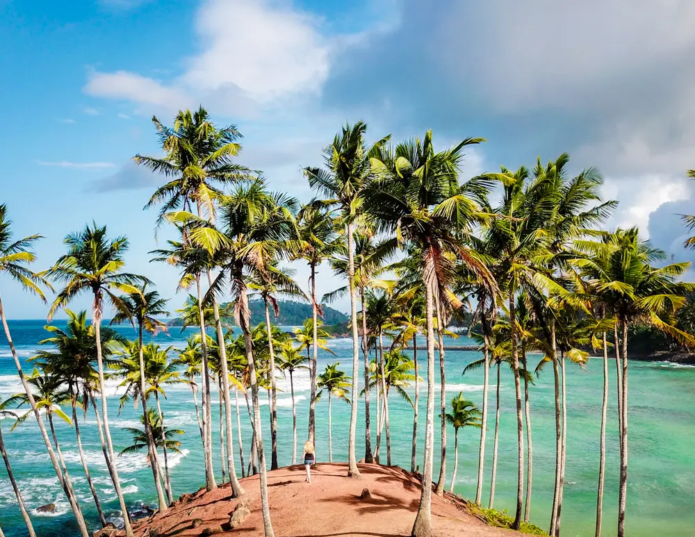
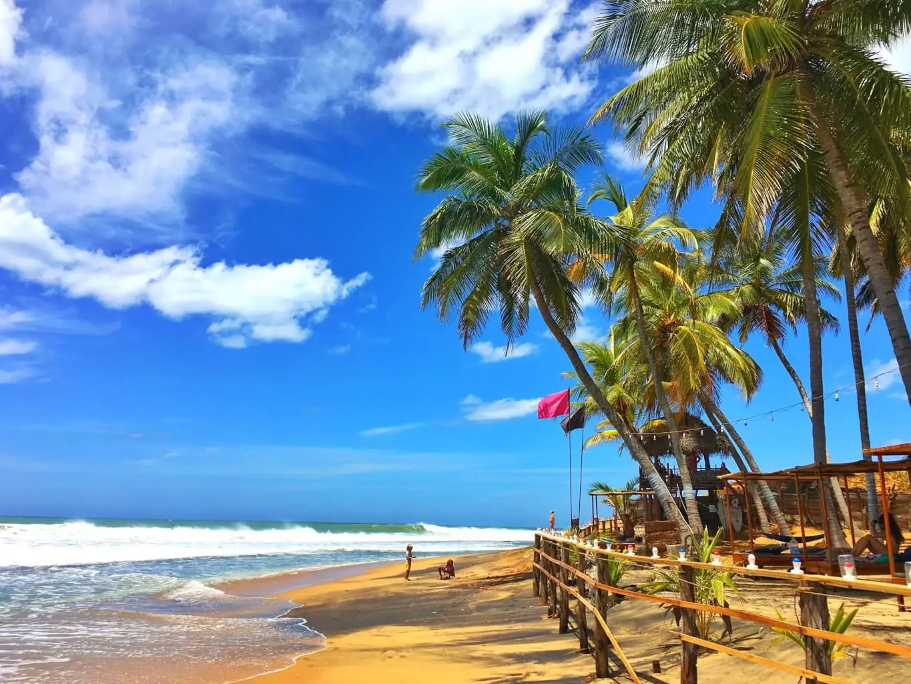
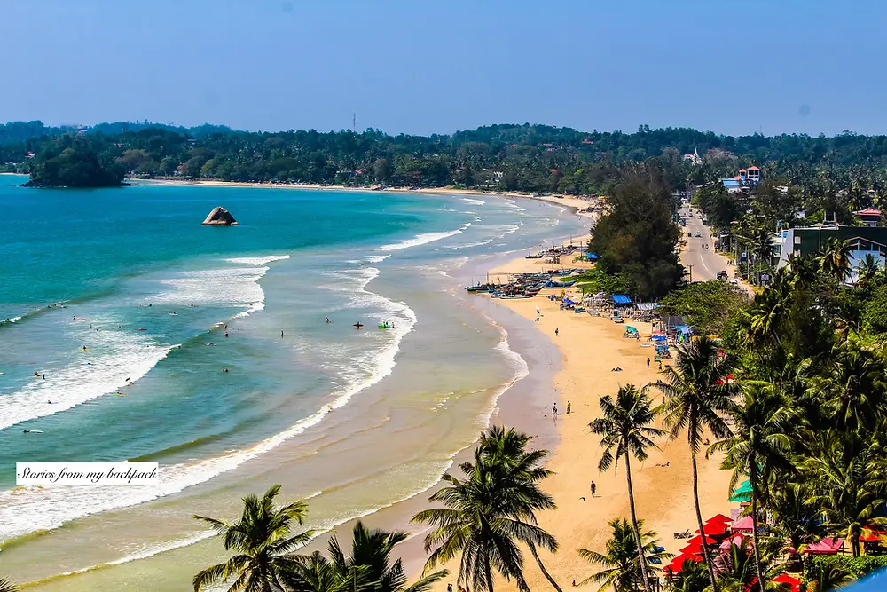
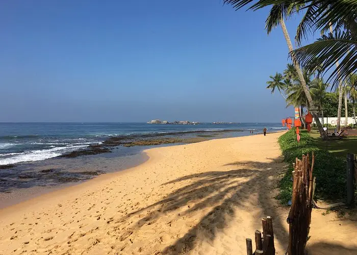

Mirissa

Mrissa is one of the nicest beaches in Sri Lanka. Mirissa draws visitors from all over the world for both ecological and vacation reasons, thanks to its vistas of aquatic fauna in its natural habitat.Between December and March, Mirissa, a bustling beach town on Sri Lanka's south coast, is well renowned as an excellent place for whale and dolphin viewing.
Arugam Bay

Arugam Bay is one of Sri Lanka's best beaches, especially for surfing. The clear waters of Arugam Bay offer excellent fishing and underwater photography opportunities. Arugam Bay is known for being one of the top surfing spots on the planet. Book a lagoon tour to take you on a calm and peaceful stroll around the lagoon's hidden gems. You will be delighted to observe millions of migratory birds if you visit the Arugam Bay during the off-season
Welligama

The Weligama beach on Sri Lanka's southwest coast is one of the country's greatest beach destinations. It is said to be the most beautiful beach in Sri Lanka. You can take selfies with your friends and family here. It is the best beach for surfing because there are no sharks. Because it is protected by a shallow coral reef, it is an ideal location for diving and snorkeling. Enjoy the most breathtaking stilt fishing views.
Hikkaduwa

Some of the most luxurious hotels and nightclubs may be found on Hikkaduwa Beach. Many tourists from other countries come to see this feature. It promises unspoiled natural beauty as well as relaxation for both the body and the soul. At the Coral Sanctuary, where turtle eggs are buried in the sand for hatching, learn some interesting facts about turtles and coral life. Take a glass-bottomed boat trip through the coral sanctuary to see the most magnificent aquatic life.
.webp)